离散裂隙网络（高级）
说明
注意
要在 3DEC 中查看此项目，请使用菜单命令 。选择“3DEC/ ExampleApplications/ DFN_Advanced”，然后选择“dfn_advanced.prj”进行加载。所用的主数据文件（main data files）显示在本示例的末尾。所有数据文件都可在该项目中找到。
本算例介绍 DFN 模型的定义、生成和显示。DFN 模型是一组描述离散裂隙网络几何特征的统计分布，所描述的特征包括裂隙尺寸、方位和位置。结合密度项和随机种子，可用它生成 DFN 随机实现。DFN 随机实现是一组特征符合 DFN 模型统计描述的裂隙。本算例从一个通用 DFN 模型生成一次随机实现。首先简要回顾 DFN 建模框架，然后定义基准 DFN 模型的参数并生成随机实现，再计算和显示生成的 DFN 特征，包括连通性。在此基础上还构建一个简化 DFN，通过修改网络来减少后续力学建模中可能遇到的数值问题。DFN 模型采用常见的裂隙描述方式，即由若干裂隙组组成，各组密度根据钻孔和测线上的表观裂隙强度、体积密度或体积内的裂隙总数确定。因此，DFN 密度会针对这些一维观测裂隙强度或预期的三维裂隙密度进行标定。
生成 DFN 模型算例的随机实现
所需的 DFN 模型应具有以下特征。
- 在三维中采用圆盘模拟裂隙。
- 裂隙方位由三组裂隙组合而成，即近水平组、近竖直组，以及一组分布更分散的裂隙（称为“背景裂隙”）。
- 背景裂隙组对应较小尺寸的裂隙，其尺寸分布不同于其他由较大裂隙组成的裂隙组。
- 裂隙位置在空间中均匀分布，即采用泊松分布模型。
- 每个裂隙组均具有指定的密度。
先回顾一下，裂隙的尺寸、方位和位置分布通过 创建裂隙模板命令（fracture template create） 命令定义。DFN 模板是 DFN 的统计描述，而不是裂隙的一次实际随机实现。要生成符合所需模型的裂隙，需要三个 DFN 模板。定义模板后，在 DFN 生成阶段指定对应裂隙组的密度，例如使用 生成裂隙命令（fracture generate） 命令。将 DFN 模板、密度项和随机种子相结合，即可创建一次 DFN 随机实现。这三个 DFN 模板的裂隙尺寸均采用幂律分布，方位和密度则可由现场观测确定。近竖直组与近水平组的裂隙尺寸标度指数均设为 4，尺寸分布下限 \(l_{min}\) 为 10 m。各组均具有一个优势方位及一定的离散程度，采用 Fisher 分布模拟。近竖直组的 \(\kappa\) 参数为 200，近水平组的 \(\kappa\) =500。Fisher 分布是一种三维对称分布，可视为正态分布的对应形式，通常用于模拟在均值周围具有一定离散程度的优势方位，例如参见 [Fisher1993]。
背景裂隙的尺寸标度指数设为 3.2，尺寸范围为 [2; 10]。它们的方位通过对用户自定义分布进行自助重采样获得，该分布定义在方位文件中，见表 1（Table 1）。用户自定义分布文件本质上是裂隙极点方位（倾角与倾向）的离散值列表。通过权重列定义的乘数，可提高各离散极点方位在整个分布中的统计权重。该权重通常用于引入指定的数量和／或进行 Terzaghi 修正，以补偿沿一维钻孔或测线采样三维 DFN 时可能产生的方位偏差。用户自定义分布文件中的权重列为可选列。分布文件格式如下。
- 一行文件头。
- 随后 x 行定义离散分布。每行包含一个 ID，后跟分布的两个值，即倾角和倾向。最后一列为可选列，用于定义这些值对应的数量。若省略，各值具有相同的概率。分隔符可为空格、制表符、逗号或分号。
- 文件结尾由任意空行表示。
| ;ID | 倾角（Dip） | 倾向（DipDirection） | 权重（Weight） |
|---|---|---|---|
| 1 | 44.533 | 195.30 | 1.52 |
| 2 | 55.795 | 218.98 | 2.49 |
| 3 | 56.963 | 209.31 | 2.34 |
| 4 | 40.202 | 344.11 | 1.61 |
| 5 | 18.688 | 98.29 | 1.00 |
| 6 | 77.365 | 295.80 | 5.76 |
| … |
生成过程中随机选取裂隙方位，同时遵循权重列的相对比例。
这些裂隙组的密度以三种不同方式定义，对应实际现场可能出现的常见条件。对于近竖直裂隙，直接给定裂隙面积密度 P32。对于近水平裂隙，指定在竖直露头剖面上观测到的该组裂隙数量，并据此定义密度。对于背景裂隙，通过给定钻孔上的 P10 定义密度，钻孔近似为一维直线。三个裂隙组的 DFN 模板参数列于表 2（Table 2）。为减小有限尺寸效应，裂隙位置的生成域大于观测域。实际上，某些大裂隙虽然中心位于观测域之外，仍可能与该域相交并被观测到。因此，相对于观测域，生成域向外扩展一个最大裂隙尺寸。
| 属性 | 分布 | 参数 | |
|---|---|---|---|
| 第 1 组：近竖直裂隙 | 位置 | 均匀分布 | 在整个空间内生成 |
| 方位 | Fisher 分布 | 倾角 90°，倾向 120°，\(\kappa\)=200 | |
| 长度 | 幂律分布 | 标度指数 \(a=4\)，\(l_{min}=10\)，\(l_{max}=500\) | |
| density | 模型计算域范围内 \(P_{32}\)=0.33 | ||
| 第 2 组：近水平裂隙 | 位置 | 均匀分布 | 在整个空间内生成 |
| 方位 | Fisher 分布 | 倾角 20°，倾向 30°，\(\kappa\)=200 | |
| 长度 | 幂律分布 | 标度指数 \(a=4\)，\(l_{min}=10\)，\(l_{max}=500\) | |
| density | 竖直露头上观测到的裂隙数量：39 | ||
| 第 3 组：背景裂隙 | 位置 | 均匀分布 | 在整个空间内生成 |
| 方位 | 自助重采样 | 从文件读取 | |
| 长度 | 幂律分布 | 标度指数 \(a=3.2\)，\(l_{min}=2\)，\(l_{max}=10\) | |
| density | 在竖直钻孔上测得 \(P_{10}=0.5\)（\(l=85\) m） |
初始化
生成裂隙之前，必须通过 模型计算域范围命令（model domain extent） 命令指定计算域。裂隙只能存在于这个长方体体积内，并在其边界处被截断。还可以在生成命令中定义生成体积和容许体积，但容许体积必须包含在计算域范围内。此时，在生成体积内随机生成裂隙位置，仅保留部分或全部位于容许体积内的裂隙，并在容许体积的边界处截断。此外，为使生成的随机实现可重复，需固定生成过程的初始随机种子。
model new
; 定义计算域
model domain extent -50 50 -50 50 -50 50
; 固定随机种子
model random 101
为便于显示和标定，定义若干几何对象以模拟露头和钻孔。可以计算裂隙与一维或二维几何对象的交线或交点，并进行分析和显示。这里定义两个钻孔（一个竖直，另一个倾斜 45°）以及两个露头。露头由单个平面二维多边形组成，钻孔则定义为一维线。也可以采用圆柱形几何对象模拟钻孔。
; 创建钻孔
geom set 'vertical_borehole'
geom edge create by-position (0,0,-45) (0,0,40)
geom set '45_degree_borehole'
fish def make_45_borehole
local x1 = -50
local x2 = 50
; 旋转 45 度
local x1rot = x1*math.cos(math.pi/4)
local z1rot = x1*math.sin(math.pi/4)
local x2rot = x2*math.cos(math.pi/4)
local z2rot = x2*math.sin(math.pi/4)
command
geom edge create by-position [(x1rot,0,z1rot)] [(x2rot,0,z2rot)]
endcommand
end
[make_45_borehole]
; 创建露头
geom set 'horizontal_outcrop'
geom polygon create by-position (-40,-40,40) (-40,40,40) ...
(40,40,40) (40,-40,40)
geom set 'vertical_outcrop'
geom polygon create by-position (-41,-41,50) (-41,41,50) ...
(-41,41,40) (-41,-41,40)
这些几何如图 1（Figure 1）所示。

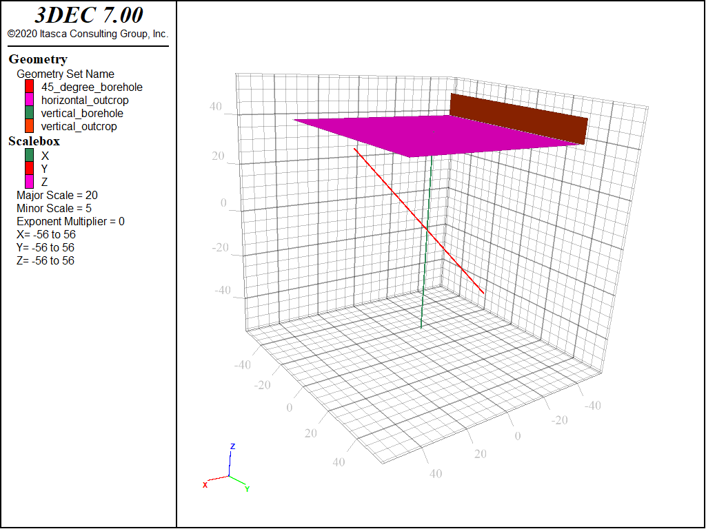
图 1：区域、钻孔与露头。
生成 DFN
这三个裂隙组分别通过 DFN 模板定义，并分步生成。对于每个裂隙组，通过 创建裂隙模板命令（fracture template create） 命令定义 DFN 模板参数，指定尺寸和方位分布。随后使用 生成裂隙命令（fracture generate） 命令生成裂隙，同时指定所用模板及目标密度。生成域在 生成裂隙命令（fracture generate） 命令中定义，容许域则未单独指定，因此采用模型计算域。对于近竖直裂隙，使用内置分布，相应的两条命令较为简单。通过 mass-density 关键字定义的目标密度为裂隙面积密度 \(P_{32}\)，数值为 0.33。
; 定义第 1 组的模板，即竖直裂隙
fracture template create 'sub_vertical' orientation fisher 90,120,200 ...
size power-law 4 size-limit 10 500
fracture generate dfn 'sub_vertical' generation-box ...
-100 100 -100 100 -100 100 template 'sub_vertical' mass-density 0.33
对于近水平裂隙，当竖直露头上可见的裂隙数量达到前文指定值时，即达到目标密度。由于生成命令没有内置这一选项，因此需要定义用户自定义停止准则。为达到该密度，在 生成裂隙命令（fracture generate） 命令中使用两个 FISH 函数，一个作为修改函数（通过 修改（modify） 关键字指定的 hori_study 函数），另一个作为用户自定义停止函数（通过 FISH 停止函数（fish-stop） 关键字指定的 hori_stop 函数）。每生成一条裂隙，程序都会调用修改函数，并将该裂隙的指针作为参数传入。本算例用它统计与竖直露头相交的裂隙数量，所用 FISH 内置函数为 裂隙与几何对象交切状态（fracture.gintersect）。每生成一条裂隙后还会调用停止函数，若该函数返回 1，则停止生成。在此，该函数用于检查与竖直露头相交的裂隙数量是否已达到目标值。
; 定义第 2 组的模板，即水平裂隙
fracture template create 'sub_horizontal' orientation fisher 20 30 500 ...
size power-law 4 size-limit 10 500
fish define variables
global nb_hori = 0
global nb_hori_aimed = 39
end
[variables]
fish define hori_study(frac)
local outc = geom.set.find('vertical_outcrop')
local is_inter = fracture.gintersect(frac,outc)
if is_inter>0
nb_hori = nb_hori+1
endif
end
fish define hori_stop
hori_stop = 0
if nb_hori >= nb_hori_aimed
hori_stop=1
endif
end
fracture generate dfn 'sub_horizontal' generation-box ...
-100 100 -100 100 -100 100 template 'sub_horizontal' ...
modify hori_study fish-stop hori_stop
对于第三组背景裂隙，通过竖直钻孔上的 \(P_{10}\) 定义密度。在 生成裂隙命令（fracture generate） 中使用 p10 和 几何（geometry） 关键字，通过几何集指定钻孔。持续生成裂隙，直到生成命令所定义钻孔上的裂隙频率，即 \(P_{10}\)，达到目标值。虽然计算了 \(P_{10}\)，但并未实际计算钻孔截交点。此外，还可以直接指定钻孔的直线，而不使用几何集。
; 定义第 3 组的模板，即背景节理
fracture template create 'background' orientation bootstrapped ...
'orientation_distribution.inp' size power-law 3.2 size-limit 2 10
fracture generate dfn 'background' generation-box ...
-55 55 -55 55 -55 55 template 'background' p10 0.5 ...
geometry 'vertical_borehole'
所得的 DFN（如图 2（Figure 2）所示）包含约 110,000 条裂隙。该图通过添加Fracture 绘图项并按 DFN 名称着色（在 Labels 中）而得到。相关的施密特网如图 3（Figure 3）所示，其中两个优势方位清晰可见。该图通过添加绘图项Fracture stereonet而得到。

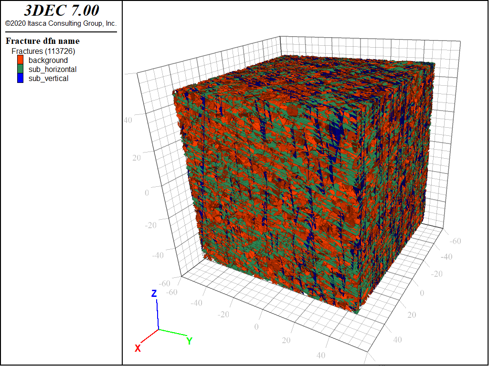
图 2：生成的含三组裂隙的 DFN。

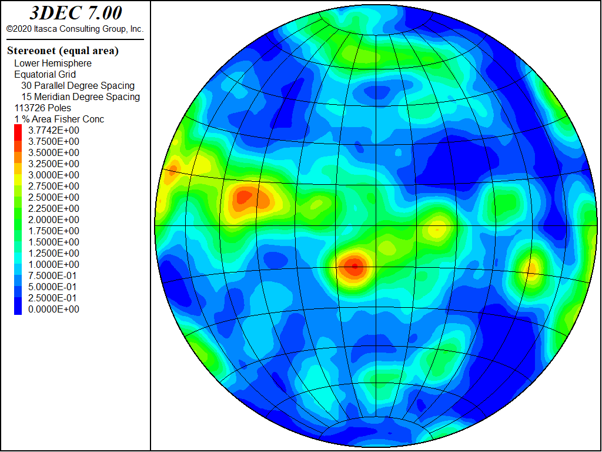
图 3：完整 DFN 的施密特网（等面积投影，Fisher 集中度）：等值线图（1% 圆面积）。
DFN 分析
本节分析 DFN 的部分特征。首先输出 DFN 的整体统计量，并对露头和钻孔进行简单采样，同时分析 DFN 的连通性。本节分析较为基础，可作为开展更深入分析的起点。计算裂隙统计量命令（fracture compute） 命令可显示 DFN 密度，并输出不同形式的密度，例如通过 mass-density 关键字输出裂隙面积密度，通过 p10 关键字输出任意直线上的 \(P_{10}\) 等。还可以使用 FISH 内置函数输出其他整体统计量。本算例的总裂隙密度 \(P_{32}\) 为 1.6 m2/m3。注意，裂隙 P10 计算命令（fracture compute p10） 命令和 FISH 内置函数 裂隙与几何多边形交切的P21值（fracture.geomp21） 能够快速获取 DFN 密度，但不会实际计算交线或交点。此外，裂隙 P10 计算命令（fracture compute p10） 命令不需要预先建立几何对象，因为该对象会在命令行中临时定义。
fracture compute mass-density
fracture compute p10 begin (-50,0,0) end (50,0,0)
fish define geometry_density
local poutcrop = geom.set.find('vertical_outcrop')
local pborehole = geom.set.find('vertical_borehole')
local oo = io.out('p21 vertical = '+string(fracture.geomp21(poutcrop)))
oo = io.out('p10 vertical = '+string(fracture.geomp10(pborehole)))
end
[geometry_density]
要生成迹线图并获得沿钻孔的截交点，首先必须计算 DFN 与露头的相交关系。裂隙与平面的交线称为迹线，裂隙与直线的交点称为截交点。使用 计算裂隙交点命令（fracture intersections compute） 命令及 与几何集求交（with-geometry） 关键字，计算裂隙与几何对象的交线或交点，并将其保存在不同的相交集合中。随后，为便于进一步分析，使用 assign_extras FISH 函数为裂隙附加变量赋予索引，以标识裂隙是否与当前某一几何集相交。这里分别将附加变量 1、2、3 赋值为 1、2、3，从而识别与各相交集合关联的裂隙。使用多个附加变量，是因为同一裂隙可能同时与多个不同的几何对象相交。也可以使用类似的 FISH 函数导出迹线属性。
; 迹线和截交点
fracture intersection compute with-geometry 'horizontal_outcrop' ...
intersection-set 'inter_hori_out' group-slot '1'
fracture intersection compute with-geometry 'vertical_outcrop' ...
intersection-set 'inter_vert_out' group-slot '2'
fracture intersection compute with-geometry 'vertical_borehole' ...
intersection-set 'inter_vert_bore' group-slot '3'
fish define assign_extras
local set1 = fracture.inter.set.find(1)
local intlist = fracture.inter.set.interlist(set1)
loop foreach e1 intlist
local f1 = fracture.inter.end1(e1)
if type.pointer.id(f1) = fracture.typeid then
fracture.extra(f1,1) = 1
endif
endloop
local set2 = fracture.inter.set.find(2)
intlist = fracture.inter.set.interlist(set2)
loop foreach e1 intlist
f1 = fracture.inter.end1(e1)
if type.pointer.id(f1) = fracture.typeid then
fracture.extra(f1,2) = 2
endif
endloop
local set3 = fracture.inter.set.find(3)
intlist = fracture.inter.set.interlist(set3)
loop foreach e1 intlist
f1 = fracture.inter.end1(e1)
if type.pointer.id(f1) = fracture.typeid then
fracture.extra(f1,3) = 3
endif
endloop
end
[assign_extras]
图 4（Figure 4）和图 5（Figure 5）显示用前面的代码计算得到的两幅露头迹线图。这些图通过添加按长度着色的绘图项DFN intersections（在 Values 中），并在Display 选项中仅选择相应的交线集（此处命名为 inter_hori_out 和 inter_vert_out）而得到。在图 6（Figure 6）中显示了与竖向钻孔相交的裂隙。这是通过添加按面积着色、并以 extra 3 为过滤条件的绘图项DFN values而得到的。

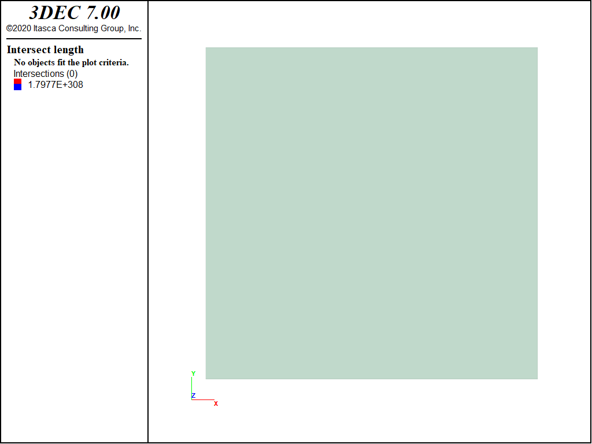
图 4：水平露头上的迹线，按长度着色。

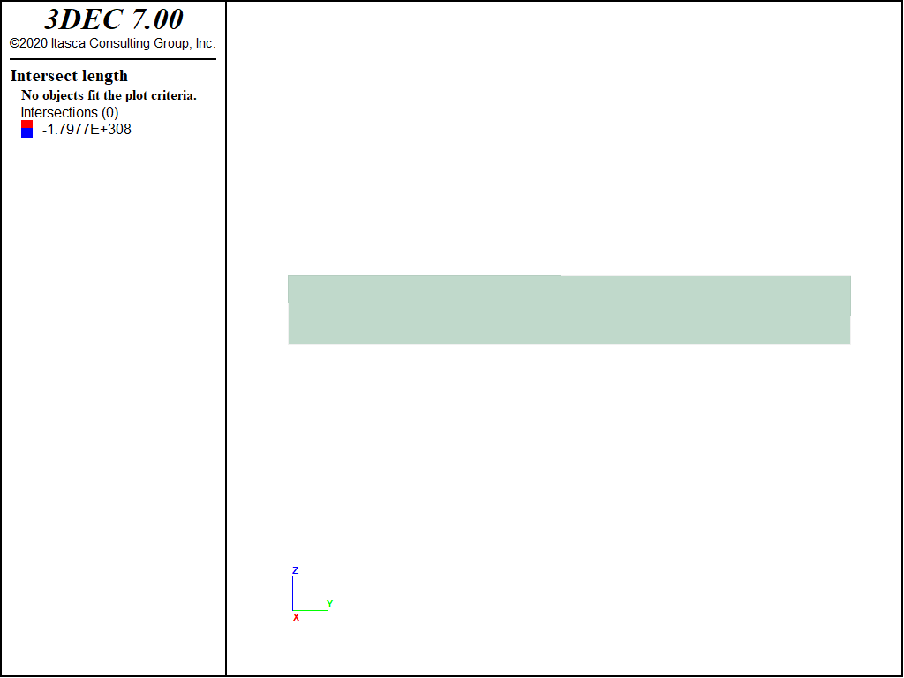
图 5：竖向露头上的迹线，按长度着色。

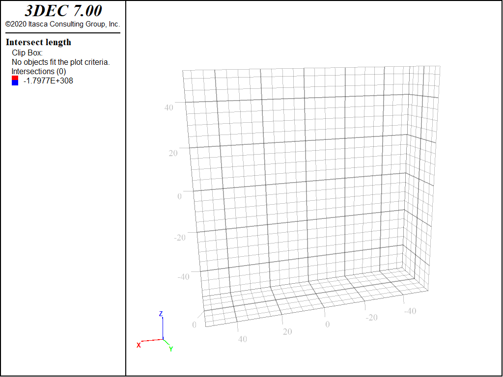
图 6：与竖向钻孔相交的裂隙。
最后，分析 DFN 中裂隙之间的连通性。第一步是计算裂隙之间的交线。再次使用命令 计算裂隙交点命令（fracture intersections compute）（不使用 与几何集求交（with-geometry） 关键字），得到约 500,000 条裂隙交线。第二步是计算连通裂隙的簇。裂隙簇定义为相互相交的裂隙集合。换言之，簇中任意两条裂隙之间总存在连通的路径。反之，两个不同簇中的裂隙互不连通。使用 计算裂隙聚类命令（fracture cluster） 命令计算各簇。所得的交线和簇如图 7（Figure 7）和图 8（Figure 8）所示。图 7（Figure 7）通过添加按长度着色（在 Values 中）的绘图项DFN intersections，并在Display 选项中仅选择名为 all 的集合而得到。图 8（Figure 8）通过添加绘图项DFN values并按簇着色（在 Values 中）而得到。如该图所示，在本情况下裂隙连通性良好，仅有极少数裂隙不属于全局簇。然而在连通性较差的 DFN 中，簇之间的组织可能复杂得多：
fracture intersection compute intersection-set 'all'
fracture cluster group-slot '1' intersection-set 'all'

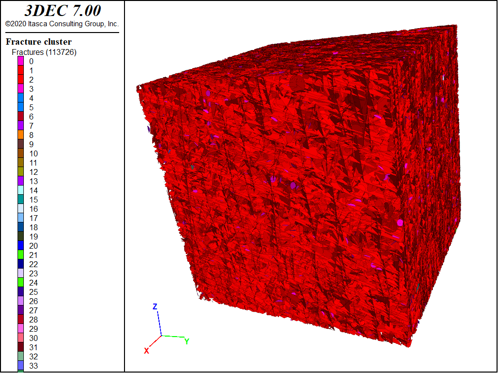
图 8：按簇索引着色的裂隙（蓝色：主簇，绿色：其他）。
DFN 简化
在某些情况下，DFN 中的裂隙数量过多，无法用于后续力学建模。因此，可能需要对 DFN 进行简化，同时保留原始 DFN 的诸多特征。本算例基于以下假设，依次对 DFN 进行处理。
- 对于所研究的应用，某些裂隙可以忽略，因此可以将其删除，具体情形如下。
- 裂隙不属于最大的连通裂隙簇，或者
- 裂隙距离给定注入点较远。
- 可以将裂隙投影至共同平面进行组合，或者根据邻近程度进行合并。
这些假设可用于从给定点实施水力压裂增产的情形，以简化模型。简化假设是否合理由用户负责判断，且显然取决于目标应用的具体条件。特别是，通过 合并裂隙命令（fracture combine） 命令合并裂隙，并不能保证保留 DFN 的全部特征。用户应针对具体用途评估 DFN 的有效性。首先识别所有不属于最大裂隙簇的裂隙。这里假设仅最大裂隙簇与基准钻孔连通，因此使用 删除裂隙命令（fracture delete） 命令并指定适当范围，删除不属于该簇的孤立裂隙。计算裂隙簇时，程序会根据所依据的相交集合名称和裂隙簇索引，将分组与裂隙簇关联起来。本算例中，最大簇内的裂隙位于 all1 分组中。实际操作时，为提高计算速度，建议在修改 DFN 前使用 删除裂隙交点命令（fracture intersections delete） 命令清除相交对象和裂隙簇，操作完成后再重新计算相交关系。在当前条件下，大多数裂隙属于最大簇，孤立裂隙所占比例很小。这一步简化从 DFN 中剔除了 2000 条裂隙。
; 仅保留无限连通簇
fracture intersection delete
fracture delete range group "all1" not
fracture intersection compute intersection-set 'all'
下一步，删除与给定注入段之间“连通距离”过长的裂隙。裂隙与参考区域（如注入段）之间的“连通距离”是裂隙与参考之间最短连通路径的总长度（图 9（Figure 9））。它是必须穿过的、从裂隙之间交线中心到该段的总距离。

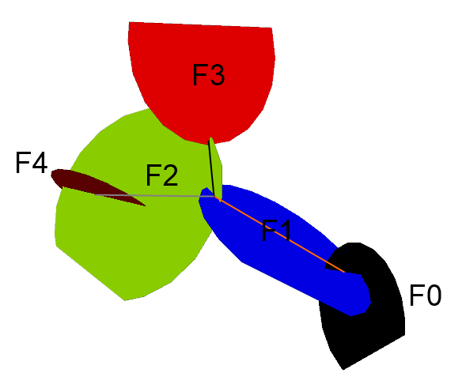
图 9：4 条裂隙与以红色立方体表示的参考之间的连通距离示意图。F1 与参考直接相连，连通距离为 0。对 F2，为橙色线段的长度；对 F3，为黑色线段长度与橙色线段长度之和；对 F4，为橙色线段长度与灰色线段长度之和。
首先，定义表示注入段的二维几何，并用 裂隙连通距离计算命令（fracture connectivity distance） 命令计算连通距离。接着删除“连通距离”大于 50 m 的裂隙。这一简化从 DFN 中又删去 75,000 条裂隙。所得的过滤后 DFN 如图 10（Figure 10）所示（DFN 值按 extra 6 着色）。
; 按连通距离筛选
geom set 'injection_section'
geom poly create by-position (-1,-1,-1) (-1,1,-1) (1,1,-1) (1,-1,-1)
geom poly create by-position (-1,-1,-1) (-1,1,-1) (-1,1,1) (-1,-1,1)
geom poly create by-position (-1,-1,1) (-1,1,1) (1,1,1) (1,-1,1)
geom poly create by-position (1,1,1) (1,-1,1) (1,-1,-1) (1,1,-1)
geom poly create by-position (1,1,1) (1,1,-1) (-1,1,-1) (-1,1,1)
geom poly create by-position (1,-1,1) (1,-1,-1) (-1,-1,-1) (-1,-1,1)
fracture connectivity distance extra-index 6 ...
starting-geometry 'injection_section' intersection-set '5'
fracture intersection delete
fracture delete range extra 6 0 50 not

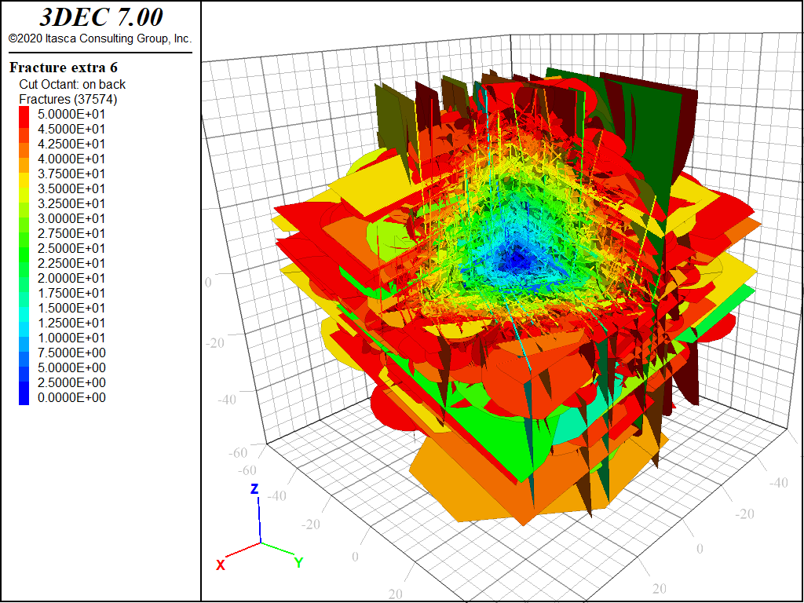
图 10：基于连通性过滤裂隙后的简化 DFN：仅保留主簇中且连通距离小于（或等于）50 m 的裂隙。裂隙按其到注入段的距离着色。
进一步的简化通过将裂隙投影至有限数量的基准平面，并使用 merge 命令合并相互重叠的裂隙实现。该命令以最大裂隙所在平面为基准。当满足以下条件时，将较小裂隙投影至该平面。
- 裂隙中心至该平面的距离小于给定距离，并且
- 该平面方位与裂隙方位之间的夹角小于给定角度。
这一过程按裂隙尺寸从大到小依次迭代。投影后，若干裂隙共面且可能相互重叠。使用 merge 关键字合并重叠裂隙。如果某条裂隙完全包含在较大裂隙中，则将其删除。根据裂隙至注入点的距离，采用三组不同的合并准则。这可用于反映以下情况，即注入点附近的裂隙对结果影响较强，而远处裂隙的影响相对较小。因此，近处裂隙采用严格准则合并，远处裂隙则采用较宽松的准则。这一步又从 DFN 中剔除了 33,000 条裂隙。
; 裂隙合并
fracture combine distance 1 angle 20 merge range extra 6 10 20
fracture combine distance 5 angle 45 merge range extra 6 20 30
fracture combine distance 10 angle 80 merge range extra 6 30 50
所得的 DFN 约有 4,000 条裂隙，如图 11（Figure 11）所示（DFN 值按 extra 6 着色）。

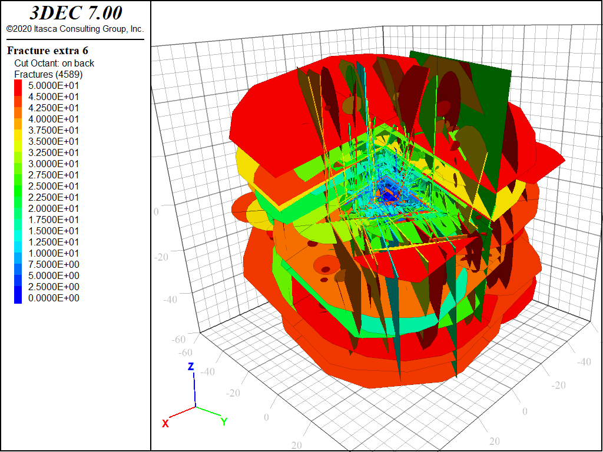
图 11：通过在参考平面内投影并合并重叠裂隙而得到的简化 DFN。
创建 3DEC 模型
现在可以由该 DFN 创建 3DEC 模型。向项目中添加一个新数据文件，并输入以下命令以创建 100 × 100 × 100 m 的块体，并将其划分为 64 个更小的块体：
model restore 'simplification2'
block create brick -50 50 -50 50 -50 50
block densify segments 4 4 4 joint-set 99
由于这些节理是虚拟的，且你很可能希望识别它们并赋予其与 DFN 生成的实际节理不同的属性，因此为其赋予 99 的节理组 ID。DFN 在 3DEC 中按以下方式模拟：
- 裂隙按从大到小排序。
- 从最大的裂隙开始，隐藏所有未与该裂隙接触的块体。
- 对可见块体进行切割。
- 所有块体重新显示。
- 用逐级更小的裂隙重复步骤 2 至 5。
这一过程说明了为何宜对初始大块体进行加密。加密可使部分块体被隐藏，从而防止最初的若干裂隙形成很长的切割。
上述步骤对每个 DFN 只需一条命令即可完成。在本示例中，我们只对次水平和次垂直裂隙组进行切割。背景裂隙仍然过密，3DEC 无法据此生成可用的凸块体。如有需要，可进一步简化背景裂隙，或按某种分类方案（如地质强度指标）降低块体的刚度和强度来加以考虑。
在切割之前，最好将容差设为较小的值，因为裂隙数量很多，而默认容差会因形成小块体而导致切割被拒绝。将以下命令添加到你的数据文件中：
block tolerance 0.001
block cut dfn name 'sub_vertical'
block cut dfn name 'sub_horizontal'
添加块体图。添加一个八分体切割平面，并绘制八分体后方的块体。图应如图 12（Figure 12）所示。

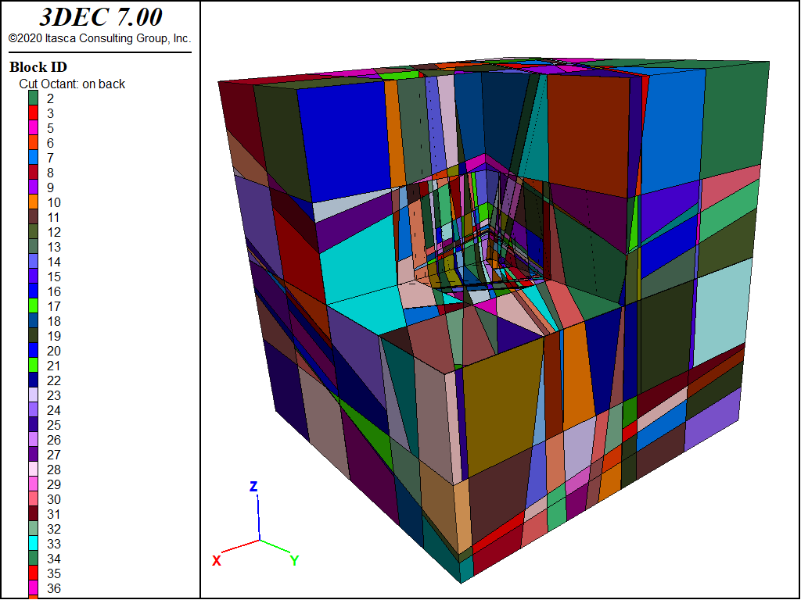
图 12：加密并用水平与竖向裂隙组切割后的块体。
DFN 中的裂隙为圆形且尺寸有限。然而在 3DEC 中块体不能被部分切割，因此所有 3DEC 节理必然大于 DFN 中对应的裂隙。我们可以通过为圆形裂隙内部区域和外部区域赋予不同的节理属性来考虑这一点。这一思路如图 13（Figure 13）所示。

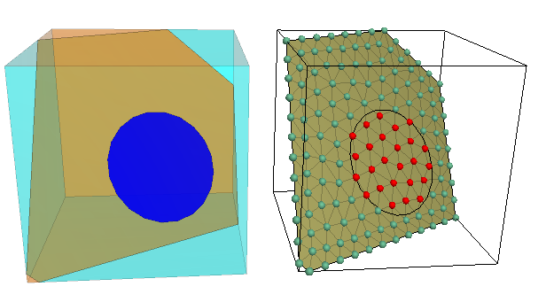
图 13：节理面上子接触在圆形裂隙内部（红色）和外部（浅蓝色）赋予不同属性的示意图
为此，首先需要对块体划分网格。对本示例，棱边长度取 2 已足够。然后赋予接触本构模型和属性。首先将施工节理设为弹性，并赋予法向和剪切刚度。然后为 DFN 节理赋予莫尔-库仑本构模型。所有 DFN 裂隙均赋予较高的黏聚力和抗拉强度，但随后通过使用范围 :kwd:`dfn-3dec’ 将裂隙内部子接触的黏聚力和抗拉强度赋为 0。命令如下所示。
; 施工缝
block contact jmodel assign elastic range joint-set 99
block contact property stiffness-normal 1e10 stiffness-shear 1e10 ...
range joint-set 99
; DFN 裂隙
block contact jmodel assign mohr range joint-set 99 not
; 外部参数
block contact property stiffness-normal 1e10 stiffness-shear 1e10 friction 20 ...
cohesion 1e6 tension 1e6 range joint-set 99 not
; 内部参数
block contact property stiffness-normal 1e10 stiffness-shear 1e10 friction 20 ...
cohesion 0 tension 0 range dfn-3dec 'sub_vertical' 'sub_horizontal'
model save 'dfn_3dec'
可通过绘制节理属性等值线来可视化 3DEC 中的 DFN（图 14（Figure 14））。为所绘制的属性选择 黏聚力（cohesion）。然后可以隐藏由 BLOCK DENSIFY 命令生成的虚拟节理：单击绘图项旁的范围图标，从范围列表中选择 Joint ID，勾选 Not 复选框并为 ID 输入 99。现在便可看到黏聚力为 0 的深色断层圆截面，以及黏聚力很高的其他断层截面。

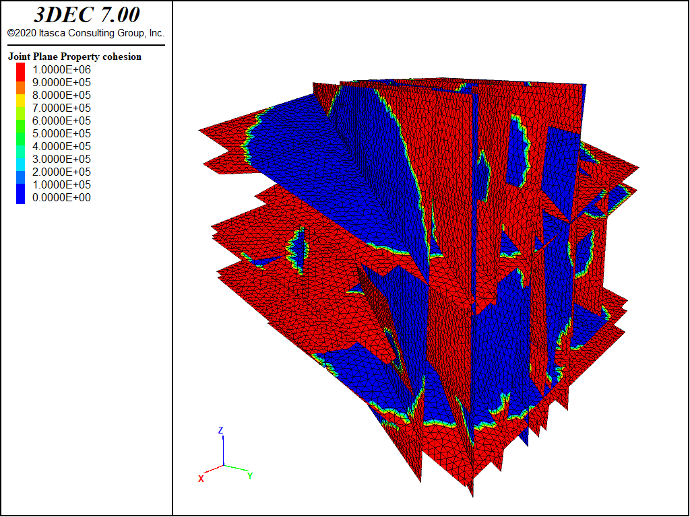
图 14：用 DFN 切割生成的节理，按黏聚力作等值线。
只绘制位于 DFN 裂隙内部的节理部分的简便方法，是在图中使用 DFN Distance 范围项。 图 15（Figure 15）显示了绘制距 sub_vertical 和 sub_horizontal DFN 距离在 0.01 以内的节理的结果。

参考文献
| [Fisher1993] | Fisher, N. I.，《圆周数据的统计分析》（Statistical Analysis of Circular Data），Cambridge University Press，1993 年。 |
数据文件
dfn_create.dat
;-----------
; 代码 1
;-----------
; excerpt-init-start
model new
; 定义计算域
model domain extent -50 50 -50 50 -50 50
; 固定随机种子
model random 101
; excerpt-init-end
;-----------
; 代码 2
;-----------
; excerpt-bhss-start
; 创建钻孔
geom set 'vertical_borehole'
geom edge create by-position (0,0,-45) (0,0,40)
geom set '45_degree_borehole'
fish def make_45_borehole
local x1 = -50
local x2 = 50
; 旋转 45 度
local x1rot = x1*math.cos(math.pi/4)
local z1rot = x1*math.sin(math.pi/4)
local x2rot = x2*math.cos(math.pi/4)
local z2rot = x2*math.sin(math.pi/4)
command
geom edge create by-position [(x1rot,0,z1rot)] [(x2rot,0,z2rot)]
endcommand
end
[make_45_borehole]
; 创建露头
geom set 'horizontal_outcrop'
geom polygon create by-position (-40,-40,40) (-40,40,40) ...
(40,40,40) (40,-40,40)
geom set 'vertical_outcrop'
geom polygon create by-position (-41,-41,50) (-41,41,50) ...
(-41,41,40) (-41,-41,40)
; excerpt-bhss-end
model save 'geometries'
;------------
; 代码 3
;------------
; excerpt-gnfs-start
; 定义第 1 组的模板，即竖直裂隙
fracture template create 'sub_vertical' orientation fisher 90,120,200 ...
size power-law 4 size-limit 10 500
fracture generate dfn 'sub_vertical' generation-box ...
-100 100 -100 100 -100 100 template 'sub_vertical' mass-density 0.33
; excerpt-gnfs-end
;-----------
; 代码 4
;-----------
; excerpt-set2-start
; 定义第 2 组的模板，即水平裂隙
fracture template create 'sub_horizontal' orientation fisher 20 30 500 ...
size power-law 4 size-limit 10 500
fish define variables
global nb_hori = 0
global nb_hori_aimed = 39
end
[variables]
fish define hori_study(frac)
local outc = geom.set.find('vertical_outcrop')
local is_inter = fracture.gintersect(frac,outc)
if is_inter>0
nb_hori = nb_hori+1
endif
end
fish define hori_stop
hori_stop = 0
if nb_hori >= nb_hori_aimed
hori_stop=1
endif
end
fracture generate dfn 'sub_horizontal' generation-box ...
-100 100 -100 100 -100 100 template 'sub_horizontal' ...
modify hori_study fish-stop hori_stop
; excerpt-set2-end
;-----------
; 代码 5
;-----------
; excerpt-set3-start
; 定义第 3 组的模板，即背景节理
fracture template create 'background' orientation bootstrapped ...
'orientation_distribution.inp' size power-law 3.2 size-limit 2 10
fracture generate dfn 'background' generation-box ...
-55 55 -55 55 -55 55 template 'background' p10 0.5 ...
geometry 'vertical_borehole'
; excerpt-set3-end
model save 'dfngeneration'
;-----------
; 代码 6
;-----------
; 输出密度
; excerpt-dens-start
fracture compute mass-density
fracture compute p10 begin (-50,0,0) end (50,0,0)
fish define geometry_density
local poutcrop = geom.set.find('vertical_outcrop')
local pborehole = geom.set.find('vertical_borehole')
local oo = io.out('p21 vertical = '+string(fracture.geomp21(poutcrop)))
oo = io.out('p10 vertical = '+string(fracture.geomp10(pborehole)))
end
[geometry_density]
; excerpt-dens-end
;-----------
; 代码 7
;-----------
; excerpt-tnis-start
; 迹线和截交点
fracture intersection compute with-geometry 'horizontal_outcrop' ...
intersection-set 'inter_hori_out' group-slot '1'
fracture intersection compute with-geometry 'vertical_outcrop' ...
intersection-set 'inter_vert_out' group-slot '2'
fracture intersection compute with-geometry 'vertical_borehole' ...
intersection-set 'inter_vert_bore' group-slot '3'
fish define assign_extras
local set1 = fracture.inter.set.find(1)
local intlist = fracture.inter.set.interlist(set1)
loop foreach e1 intlist
local f1 = fracture.inter.end1(e1)
if type.pointer.id(f1) = fracture.typeid then
fracture.extra(f1,1) = 1
endif
endloop
local set2 = fracture.inter.set.find(2)
intlist = fracture.inter.set.interlist(set2)
loop foreach e1 intlist
f1 = fracture.inter.end1(e1)
if type.pointer.id(f1) = fracture.typeid then
fracture.extra(f1,2) = 2
endif
endloop
local set3 = fracture.inter.set.find(3)
intlist = fracture.inter.set.interlist(set3)
loop foreach e1 intlist
f1 = fracture.inter.end1(e1)
if type.pointer.id(f1) = fracture.typeid then
fracture.extra(f1,3) = 3
endif
endloop
end
[assign_extras]
; excerpt-tnis-end
model save 'traces'
;-----------
; 代码 8
;-----------
; 连通性
; excerpt-kelx-start
fracture intersection compute intersection-set 'all'
fracture cluster group-slot '1' intersection-set 'all'
; excerpt-kelx-end
model save 'connectivity'
;-----------
; 代码 9
;-----------
; excerpt-wlns-start
; 仅保留无限连通簇
fracture intersection delete
fracture delete range group "all1" not
fracture intersection compute intersection-set 'all'
; excerpt-wlns-end
;-----------
; 代码 10
;-----------
; excerpt-lake-start
; 按连通距离筛选
geom set 'injection_section'
geom poly create by-position (-1,-1,-1) (-1,1,-1) (1,1,-1) (1,-1,-1)
geom poly create by-position (-1,-1,-1) (-1,1,-1) (-1,1,1) (-1,-1,1)
geom poly create by-position (-1,-1,1) (-1,1,1) (1,1,1) (1,-1,1)
geom poly create by-position (1,1,1) (1,-1,1) (1,-1,-1) (1,1,-1)
geom poly create by-position (1,1,1) (1,1,-1) (-1,1,-1) (-1,1,1)
geom poly create by-position (1,-1,1) (1,-1,-1) (-1,-1,-1) (-1,-1,1)
fracture connectivity distance extra-index 6 ...
starting-geometry 'injection_section' intersection-set '5'
fracture intersection delete
fracture delete range extra 6 0 50 not
; excerpt-lake-end
model save 'simplification1'
;-----------
; 代码 10
;-----------
; excerpt-snel-start
; 裂隙合并
fracture combine distance 1 angle 20 merge range extra 6 10 20
fracture combine distance 5 angle 45 merge range extra 6 20 30
fracture combine distance 10 angle 80 merge range extra 6 30 50
; excerpt-snel-end
model save 'simplification2'
dfn_3dec.dat
; excerpt-block-start
model restore 'simplification2'
block create brick -50 50 -50 50 -50 50
block densify segments 4 4 4 joint-set 99
; excerpt-block-end
; excerpt-cut-start
block tolerance 0.001
block cut dfn name 'sub_vertical'
block cut dfn name 'sub_horizontal'
; excerpt-cut-end
; excerpt-zone-start
block zone generate edgelength 2
; excerpt-zone-end
; excerpt-joints-start
; 施工缝
block contact jmodel assign elastic range joint-set 99
block contact property stiffness-normal 1e10 stiffness-shear 1e10 ...
range joint-set 99
; DFN 裂隙
block contact jmodel assign mohr range joint-set 99 not
; 外部参数
block contact property stiffness-normal 1e10 stiffness-shear 1e10 friction 20 ...
cohesion 1e6 tension 1e6 range joint-set 99 not
; 内部参数
block contact property stiffness-normal 1e10 stiffness-shear 1e10 friction 20 ...
cohesion 0 tension 0 range dfn-3dec 'sub_vertical' 'sub_horizontal'
model save 'dfn_3dec'
; excerpt-joints-end
| 这些内容对您有帮助吗？… 版权与免责声明 | FLAC3D © 2019, Itasca | 原文更新于 2020 年 10 月 8 日 |